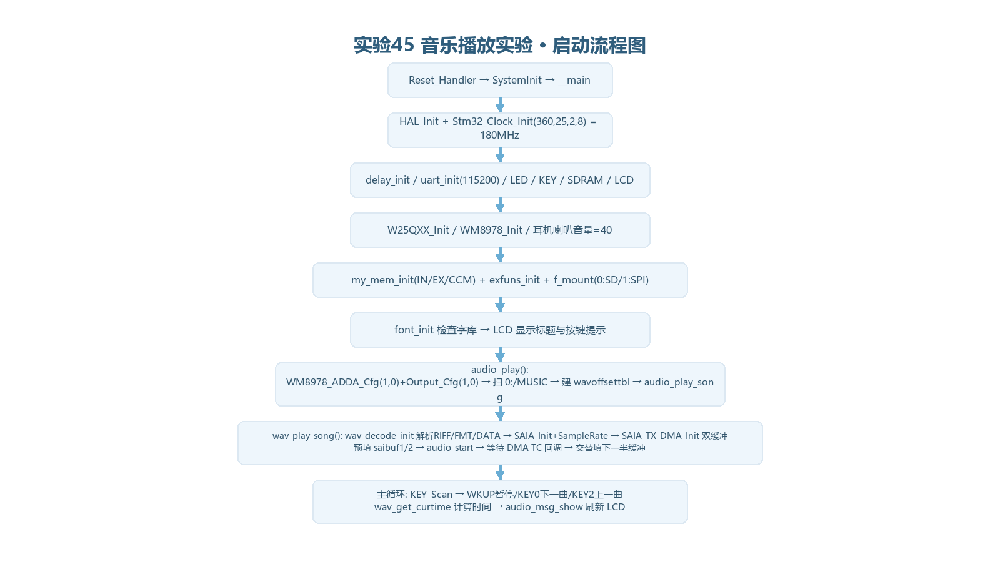
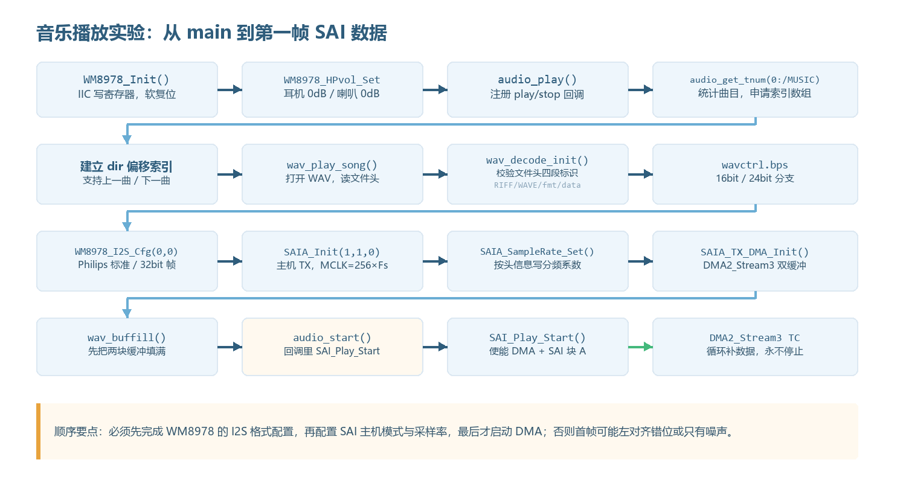
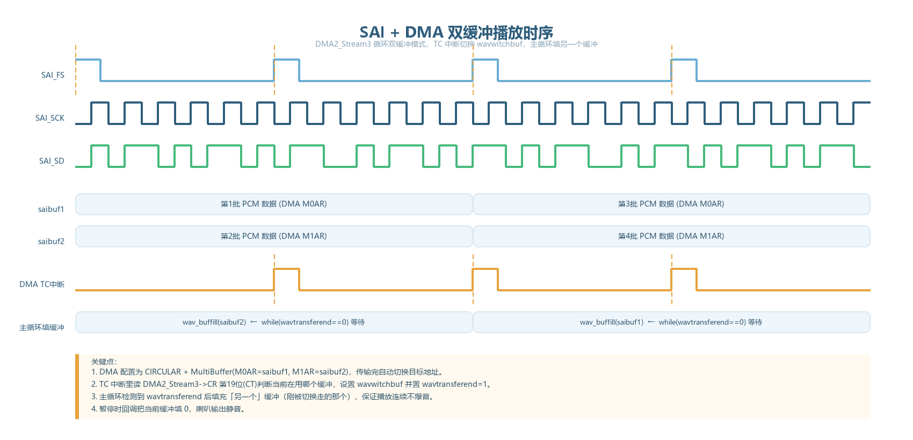
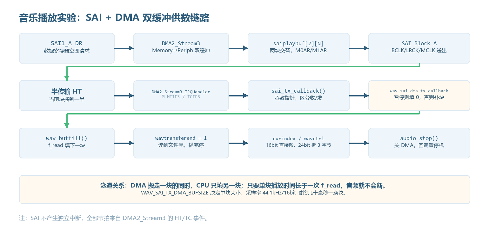

01 实验目标与硬件资源
实验45 的软件结构比图片实验更“应用化”：main 只做板级初始化，然后反复调用 audio_play()；真正的曲目扫描、文件解析、SAI 配置、DMA 供数、按键处理都在 audioplay.c 与 wavplay.c 中完成。
| 资源 | 型号 / 引脚 | 作用 |
|---|---|---|
| Codec | WM8978（IIC 控制 + I2S 数据） | DAC 输出耳机/喇叭，ADC 留作录音实验 |
| SAI | SAI1 Block A，PE2/3/4/5/6 | 主机 TX，产生 MCLK/BCLK/LRCK 与数据 |
| DMA | DMA2_Stream3 / Channel0 | 存储器到外设，循环双缓冲 |
| SD 卡 | SDMMC1 | 存放 0:/MUSIC 下的 WAV |
| 按键 | KEY0 / KEY2 / KEY_UP | 下一曲 / 上一曲 / 暂停继续 |
| LCD | RGB 屏 | 显示曲名、索引、时间与比特率 |
02 工程目录与模块分工
| 目录 / 文件 | 关键符号 | 说明 |
|---|---|---|
| USER/main.c | main | 板级初始化 + 音量设置 + audio_play |
| APP/audioplay.c | audio_play / audio_start | 曲目索引、按键、暂停状态机 |
| AUDIOCODEC/wav/wavplay.c | wav_play_song / wav_buffill | WAV 头解析、SAI 配置、补数据 |
| HARDWARE/SAI/sai.c | SAIA_Init / SAIA_TX_DMA_Init | SAI 帧格式、采样率、DMA 双缓冲 |
| HARDWARE/WM8978/wm8978.c | WM8978_Init / WM8978_I2S_Cfg | Codec 寄存器与 I2S 数据长度 |
| SYSTEM/delay | delay_us | DMA 启动前后的短延时 |
这种分层的好处是：换 Codec 只需改 WM8978 驱动，换 MCU 只需改 SAI 驱动，audioplay.c 的状态机与按键逻辑可以原样复用。
03 上电启动与 main 全貌

int main(void)
{
HAL_Init(); // HAL 与时基
Stm32_Clock_Init(360,25,2,8); // 180MHz
delay_init(180);
uart_init(115200);
LED_Init();
KEY_Init();
SDRAM_Init(); // 外部内存池依赖
LCD_Init();
W25QXX_Init(); // 字库
WM8978_Init(); // 软复位 + 通用寄存器
WM8978_HPvol_Set(40,40); // 耳机音量 40/63
WM8978_SPKvol_Set(40); // 喇叭音量 40/63
my_mem_init(SRAMIN);
my_mem_init(SRAMEX);
my_mem_init(SRAMCCM);
exfuns_init();
f_mount(fs[0],"0:",1); // SD 卡
f_mount(fs[1],"1:",1); // SPI FLASH
POINT_COLOR = RED;
while (font_init()) // 字库自检
{
LCD_ShowString(30,50,200,16,16,"Font Error!");
delay_ms(200);
LCD_Fill(30,50,240,66,WHITE);
delay_ms(200);
}
Show_Str(60,50,200,16,"阿波罗STM32F4/F7开发板",16,0);
Show_Str(60,70,200,16,"音乐播放器实验",16,0);
Show_Str(60,130,200,16,"KEY0:NEXT KEY2:PREV",16,0);
Show_Str(60,150,200,16,"KEY_UP:PAUSE/PLAY",16,0);
while (1)
{
audio_play(); // 内部是完整的播放状态机
}
}
WM8978_Init只做通用配置，真正的 I2S 格式要等解析完 WAV 头才设置。- 音量在播放前设置一次即可，播放过程中不会自动改变。
audio_play返回只发生在目录/内存等致命错误时，正常播放会一直循环。
04 启动文件与向量表
__Vectors DCD __initial_sp
DCD Reset_Handler
DCD NMI_Handler
DCD HardFault_Handler
...
DCD DMA2_Stream3_IRQHandler // SAI TX 传输完成
DCD DMA2_Stream6_IRQHandler // SDIO 备用
DCD SDIO_IRQHandler
DCD USART1_IRQHandler
DCD SysTick_Handler
Reset_Handler PROC
EXPORT Reset_Handler [WEAK]
IMPORT SystemInit
IMPORT __main
LDR R0, =SystemInit
BLX R0 // 最小系统与 FPU
LDR R0, =__main
BX R0 // C 库初始化后跳 main
ENDP
DMA2_Stream3_IRQHandler 确实被链接进来。若启动文件里名字写错，DMA 传输完成中断不会触发，双缓冲永远只播第一块。05 SystemInit 与 HAL_Init
void SystemInit(void)
{
RCC->CR |= (1 << 0);
RCC->CFGR = 0x00000000;
RCC->CR &= ~(1 << 24);
RCC->CR &= ~(1 << 16);
SCB->VTOR = FLASH_BASE | VECT_TAB_OFFSET; // 向量表
#if (__FPU_PRESENT == 1) && (__FPU_USED == 1)
SCB->CPACR |= ((3UL << 10*2)|(3UL << 11*2)); // FPU
#endif
}
HAL_StatusTypeDef HAL_Init(void)
{
HAL_NVIC_SetPriorityGrouping(NVIC_PRIORITYGROUP_4); // 4 位抢占
HAL_InitTick(TICK_INT_PRIORITY); // 1ms，最低优先级
HAL_MspInit();
return HAL_OK;
}
- SAI 的 FIFO 很浅，若 DMA 补数被其他中断拖延，立刻会听到“咔哒”声。
- DMA2_Stream3 设为最高抢占优先级，保证每个传输完成事件都能及时处理。
- SysTick 保持 0x0F，
HAL_Delay只用于非实时路径（界面刷新、按键去抖）。
06 时钟树与 SAI 时钟源
SAI1 的时钟来自 PLLI2S，公式为 SAI_CK = (HSE/pllm) × PLLI2SN / PLLI2SQ / (PLLI2SDIVQ+1)。代码里预先算好 11 档常用采样率的参数表，运行时按采样率查表，避免浮点运算。
const u16 SAI_PSC_TBL[][5]=
{
{800 ,344,7,0,12}, // 8kHz
{1102,429,2,18,2}, // 11.025kHz
{1600,344,7, 0,6}, // 16kHz
{2205,429,2,18,1}, // 22.05kHz
{3200,344,7, 0,3}, // 32kHz
{4410,429,2,18,0}, // 44.1kHz
{4800,344,7, 0,2}, // 48kHz
{8820,271,2, 2,1}, // 88.2kHz
{9600,344,7, 0,1}, // 96kHz
{17640,271,2,2,0}, // 176.4kHz
{19200,344,7,0,0}, // 192kHz
};
u8 SAIA_SampleRate_Set(u32 samplerate)
{
u8 i = 0;
RCC_PeriphCLKInitTypeDef RCCSAI1_Sture;
for (i = 0; i < (sizeof(SAI_PSC_TBL)/10); i++)
if ((samplerate/10) == SAI_PSC_TBL[i][0]) break;
if (i == (sizeof(SAI_PSC_TBL)/10)) return 1; // 不支持的采样率
RCCSAI1_Sture.PeriphClockSelection = RCC_PERIPHCLK_SAI_PLLI2S;
RCCSAI1_Sture.PLLI2S.PLLI2SN = SAI_PSC_TBL[i][1];
RCCSAI1_Sture.PLLI2S.PLLI2SQ = SAI_PSC_TBL[i][2];
RCCSAI1_Sture.PLLI2SDivQ = SAI_PSC_TBL[i][3] + 1; // HAL 内部会减 1
HAL_RCCEx_PeriphCLKConfig(&RCCSAI1_Sture);
__HAL_RCC_SAI_BLOCKACLKSOURCE_CONFIG(RCC_SAIACLKSOURCE_PLLI2S);
__HAL_SAI_DISABLE(&SAI1A_Handler);
SAI1A_Handler.Init.AudioFrequency = samplerate;
HAL_SAI_Init(&SAI1A_Handler);
SAIA_DMA_Enable(); // CR1 bit17
__HAL_SAI_ENABLE(&SAI1A_Handler);
return 0;
}
SAIA_DMA_Enable 是标准库没有提供、必须自己写寄存器的函数：置位 SAI1_Block_A->CR1 的 bit17，否则 DMA 请求不会送到 SAI。- 表中第一列是采样率除以 10，所以 44.1kHz 写作 4410，避免浮点。
PLLI2SDivQ在 HAL 里会减 1，所以表里预加 1，否则整体频率差一档。- 改采样率必须重新
HAL_SAI_Init，不能只写分频寄存器。
07 WM8978 上电与 I2S 配置

WM8978_Init 先软复位，再配置 MIC 偏置、耳机与喇叭输出、MCLK 来源、过热保护与采样倍率。播放前再调用 WM8978_ADDA_Cfg(1,0) 开 DAC、关 ADC，WM8978_Input_Cfg(0,0,0) 关输入，WM8978_Output_Cfg(1,0) 开 DAC 输出。
u8 WM8978_Init(void)
{
u8 res;
IIC_Init(); // 软件 IIC
res = WM8978_Write_Reg(0,0); // 软复位
if (res) return 1;
WM8978_Write_Reg(1,0X1B); // MICEN/BIASEN/VMIDSEL
WM8978_Write_Reg(2,0X1B0); // 耳机输出 + BOOST
WM8978_Write_Reg(3,0X6C); // 喇叭输出 + MIX
WM8978_Write_Reg(6,0); // MCLK 由外部提供
WM8978_Write_Reg(43,1<<4); // INVROUT2 反相驱动喇叭
WM8978_Write_Reg(47,1<<8); // 左 MIC 20 倍增益
WM8978_Write_Reg(48,1<<8); // 右 MIC 20 倍增益
WM8978_Write_Reg(49,1<<1); // 过热保护
WM8978_Write_Reg(49,1<<2); // SPEAKER BOOST 1.5x
WM8978_Write_Reg(10,1<<3); // 128x 过采样
WM8978_Write_Reg(14,1<<3); // ADC 128x
return 0;
}
void WM8978_I2S_Cfg(u8 fmt,u8 len)
{
fmt &= 0X03;
len &= 0X03;
WM8978_Write_Reg(4,(fmt<<3)|(len<<5)); // R4：I2S 格式 + 数据长度
}
WM8978_REGVAL_TBL，不是芯片真实值；写成功才更新缓存。因此读改写流程（如 WM8978_ADDA_Cfg）依赖于每次写都成功。- 16 位：
WM8978_I2S_Cfg(2,0)，SAI 数据长度SAI_DATASIZE_16，DMA 半字传输。 - 24 位：
WM8978_I2S_Cfg(2,2)，SAI 数据长度SAI_DATASIZE_24，DMA 以 32 位字传输。 - SAI 帧长固定 64 个 SCK，左右各 32 个 slot；数据长度只改有效位，不改帧结构。
08 播放时序与 DMA 双缓冲

SAI 配成异步主机 TX、自由协议（兼容 I2S）、MSB 优先、帧长 64、slot 32 位、双 slot 有效、FS 低有效且位于 slot0 前一位，正好匹配飞利浦标准。DMA 用循环双缓冲，M0AR=buf0、M1AR=buf1，每次搬 WAV_SAI_TX_DMA_BUFSIZE 个半字或字。
void SAIA_Init(u32 mode,u32 cpol,u32 datalen)
{
HAL_SAI_DeInit(&SAI1A_Handler);
SAI1A_Handler.Instance = SAI1_Block_A;
SAI1A_Handler.Init.AudioMode = mode; // 主机 TX
SAI1A_Handler.Init.Synchro = SAI_ASYNCHRONOUS;
SAI1A_Handler.Init.OutputDrive = SAI_OUTPUTDRIVE_ENABLE;
SAI1A_Handler.Init.NoDivider = SAI_MASTERDIVIDER_ENABLE;
SAI1A_Handler.Init.FIFOThreshold = SAI_FIFOTHRESHOLD_1QF;
SAI1A_Handler.Init.ClockSource = SAI_CLKSOURCE_PLLI2S;
SAI1A_Handler.Init.MonoStereoMode = SAI_STEREOMODE;
SAI1A_Handler.Init.Protocol = SAI_FREE_PROTOCOL; // 自由协议模拟 I2S
SAI1A_Handler.Init.DataSize = datalen; // 16 / 24
SAI1A_Handler.Init.FirstBit = SAI_FIRSTBIT_MSB;
SAI1A_Handler.Init.ClockStrobing = cpol;
SAI1A_Handler.FrameInit.FrameLength = 64; // 左右各 32 SCK
SAI1A_Handler.FrameInit.ActiveFrameLength = 32;
SAI1A_Handler.FrameInit.FSDefinition = SAI_FS_CHANNEL_IDENTIFICATION;
SAI1A_Handler.FrameInit.FSPolarity = SAI_FS_ACTIVE_LOW;
SAI1A_Handler.FrameInit.FSOffset = SAI_FS_BEFOREFIRSTBIT; // 飞利浦标准
SAI1A_Handler.SlotInit.FirstBitOffset = 0;
SAI1A_Handler.SlotInit.SlotSize = SAI_SLOTSIZE_32B;
SAI1A_Handler.SlotInit.SlotNumber = 2;
SAI1A_Handler.SlotInit.SlotActive = SAI_SLOTACTIVE_0|SAI_SLOTACTIVE_1;
HAL_SAI_Init(&SAI1A_Handler);
__HAL_SAI_ENABLE(&SAI1A_Handler);
}
void SAIA_TX_DMA_Init(u8* buf0,u8 *buf1,u16 num,u8 width)
{
...
__HAL_LINKDMA(&SAI1A_Handler,hdmatx,SAI1_TXDMA_Handler);
SAI1_TXDMA_Handler.Instance = DMA2_Stream3; // Stream3
SAI1_TXDMA_Handler.Init.Channel = DMA_CHANNEL_0;
SAI1_TXDMA_Handler.Init.Direction = DMA_MEMORY_TO_PERIPH; // 内存到外设
SAI1_TXDMA_Handler.Init.PeriphInc = DMA_PINC_DISABLE;
SAI1_TXDMA_Handler.Init.MemInc = DMA_MINC_ENABLE;
SAI1_TXDMA_Handler.Init.PeriphDataAlignment = perwidth; // 16/32 位
SAI1_TXDMA_Handler.Init.MemDataAlignment = memwidth;
SAI1_TXDMA_Handler.Init.Mode = DMA_CIRCULAR; // 循环
SAI1_TXDMA_Handler.Init.Priority = DMA_PRIORITY_HIGH;
SAI1_TXDMA_Handler.Init.FIFOMode = DMA_FIFOMODE_DISABLE;
HAL_DMA_DeInit(&SAI1_TXDMA_Handler);
HAL_DMA_Init(&SAI1_TXDMA_Handler);
HAL_DMAEx_MultiBufferStart(&SAI1_TXDMA_Handler,(u32)buf0,
(u32)&SAI1_Block_A->DR,(u32)buf1,num);
__HAL_DMA_DISABLE(&SAI1_TXDMA_Handler); // 先停，等 main 启动
delay_us(10); // 防止 -O2 优化时序
__HAL_DMA_ENABLE_IT(&SAI1_TXDMA_Handler,DMA_IT_TC);
__HAL_DMA_CLEAR_FLAG(&SAI1_TXDMA_Handler,DMA_FLAG_TCIF3_7);
HAL_NVIC_SetPriority(DMA2_Stream3_IRQn,0,0);
HAL_NVIC_EnableIRQ(DMA2_Stream3_IRQn);
}
- DMA 的 CT 位为 1 时当前使用 M1AR，说明刚播完的是 buf2。
- 回调据此设置
wavwitchbuf，主循环只填“已经播完”的那一块。 - 播放开始前必须先手动填满两块，否则第一次中断时另一块是未初始化数据。
- 暂停时回调不补新数据，而是把当前块清零，实现静音而不停时钟。
09 中断链路：DMA2_Stream3

void (*sai_tx_callback)(void); // 由应用层注册 void DMA2_Stream3_IRQHandler(void) { if (__HAL_DMA_GET_FLAG(&SAI1_TXDMA_Handler,DMA_FLAG_TCIF3_7) != RESET) { __HAL_DMA_CLEAR_FLAG(&SAI1_TXDMA_Handler,DMA_FLAG_TCIF3_7); // 清标志 sai_tx_callback(); // wav_sai_dma_tx_callback } } void wav_sai_dma_tx_callback(void) { u16 i; if (DMA2_Stream3->CR & (1<<19)) // CT=1：刚播完 buf2 { wavwitchbuf = 0; if ((audiodev.status & 0X01) == 0) // 暂停 for (i = 0; i < WAV_SAI_TX_DMA_BUFSIZE; i++) audiodev.saibuf1[i] = 0; } else // 刚播完 buf1 { wavwitchbuf = 1; if ((audiodev.status & 0X01) == 0) for (i = 0; i < WAV_SAI_TX_DMA_BUFSIZE; i++) audiodev.saibuf2[i] = 0; } wavtransferend = 1; // 通知主循环可以补数据 }
- SD 卡一次读可能几毫秒，放在中断里会阻塞其他中断并拉长中断关闭时间。
- 回调只置标志与清零，真正的
f_read在主循环wav_buffill中执行。 - 双缓冲提供了“一块播放时间”的余量，通常足够完成一次读卡。
10 主循环、按键与暂停
void audio_play(void)
{
u8 res;
DIR wavdir;
FILINFO *wavfileinfo;
u8 *pname;
u16 totwavnum;
u16 curindex;
u8 key;
u32 temp;
u32 *wavoffsettbl;
WM8978_ADDA_Cfg(1,0); // 开 DAC，关 ADC
WM8978_Input_Cfg(0,0,0); // 关输入
WM8978_Output_Cfg(1,0); // 开 DAC 输出
while (f_opendir(&wavdir,"0:/MUSIC")) // 目录不存在则死等
{
Show_Str(60,190,240,16,"MUSIC文件夹错误!",16,0);
delay_ms(200);
LCD_Fill(60,190,240,206,WHITE);
delay_ms(200);
}
totwavnum = audio_get_tnum("0:/MUSIC"); // 统计音乐文件
while (totwavnum == NULL) { ... } // 0 首也死等
wavfileinfo = mymalloc(SRAMIN,sizeof(FILINFO));
pname = mymalloc(SRAMIN,_MAX_LFN*2+1);
wavoffsettbl = mymalloc(SRAMIN,4*totwavnum); // u32 索引表
...
curindex = 0;
res = f_opendir(&wavdir,"0:/MUSIC");
while (res == FR_OK)
{
dir_sdi(&wavdir,wavoffsettbl[curindex]); // O(1) 定位
f_readdir(&wavdir,wavfileinfo);
strcpy((char*)pname,"0:/MUSIC/");
strcat((char*)pname,(const char*)wavfileinfo->fname);
Show_Str(60,190,lcddev.width-60,16,(u8*)wavfileinfo->fname,16,0);
audio_index_show(curindex+1,totwavnum);
key = audio_play_song(pname); // 阻塞直到切歌/出错
if (key == KEY2_PRES) // 上一曲
{
if (curindex) curindex--;
else curindex = totwavnum - 1;
}
else if (key == KEY0_PRES) // 下一曲
{
curindex++;
if (curindex >= totwavnum) curindex = 0;
}
else break; // 其他错误退出
}
}
while (res == 0)
{
while (wavtransferend == 0); // 等一块播完
wavtransferend = 0;
if (fillnum != WAV_SAI_TX_DMA_BUFSIZE) // 上次没填满 = 文件结束
{
res = KEY0_PRES;
break;
}
if (wavwitchbuf) fillnum = wav_buffill(audiodev.saibuf2,WAV_SAI_TX_DMA_BUFSIZE,wavctrl.bps);
else fillnum = wav_buffill(audiodev.saibuf1,WAV_SAI_TX_DMA_BUFSIZE,wavctrl.bps);
while (1)
{
key = KEY_Scan(0);
if (key == WKUP_PRES) // 暂停 / 继续
{
if (audiodev.status & 0X01) audiodev.status &= ~(1<<0);
else audiodev.status |= 0X01;
}
if (key == KEY2_PRES || key == KEY0_PRES) // 切歌
{
res = key;
break;
}
wav_get_curtime(audiodev.file,&wavctrl); // 更新秒数
audio_msg_show(wavctrl.totsec,wavctrl.cursec,wavctrl.bitrate);
t++;
if (t == 20) { t = 0; LED0 = !LED0; } // 200ms 心跳
if ((audiodev.status & 0X01) == 0) delay_ms(10);
else break; // 继续播放就回去补数据
}
}
- 暂停不关 SAI 时钟，只把下一块缓冲填 0，Codec 仍然持续收到 0 样本。
- 这样恢复播放时不需要重新同步 I2S，也不会有爆音。
- 暂停期间主循环每 10ms 扫一次按键，仍可切歌。
11 WAV 头解析与位深转换
u8 wav_decode_init(u8* fname,__wavctrl* wavx)
{
...
res = f_open(ftemp,(TCHAR*)fname,FA_READ);
if (res == FR_OK)
{
f_read(ftemp,buf,512,&br); // 头一般不超过 512 字节
riff = (ChunkRIFF *)buf;
if (riff->Format == 0X45564157) // "WAVE"
{
fmt = (ChunkFMT *)(buf+12);
fact = (ChunkFACT *)(buf+12+8+fmt->ChunkSize);
if (fact->ChunkID == 0X74636166 || fact->ChunkID == 0X5453494C)
wavx->datastart = 12+8+fmt->ChunkSize+8+fact->ChunkSize;
else
wavx->datastart = 12+8+fmt->ChunkSize;
data = (ChunkDATA *)(buf+wavx->datastart);
if (data->ChunkID == 0X61746164) // "data"
{
wavx->audioformat = fmt->AudioFormat;
wavx->nchannels = fmt->NumOfChannels;
wavx->samplerate = fmt->SampleRate;
wavx->bitrate = fmt->ByteRate*8;
wavx->blockalign = fmt->BlockAlign;
wavx->bps = fmt->BitsPerSample;
wavx->datasize = data->ChunkSize;
wavx->datastart += 8; // 跳过 data ID + size
}
}
}
f_close(ftemp);
...
}
24 位 WAV 的每个样本占 3 字节，而 SAI/DMA 以 32 位字搬运，所以 wav_buffill 先把 3 字节样本“左对齐”扩展成 4 字节：读 size/4*3 字节，再逐样本复制到 u32 数组。
u32 wav_buffill(u8 *buf,u16 size,u8 bits)
{
u16 readlen = 0;
u32 bread;
u16 i;
u32 *p,*pbuf;
if (bits == 24) // 24bit 需要 3→4 字节扩展
{
readlen = (size/4)*3;
f_read(audiodev.file,audiodev.tbuf,readlen,(UINT*)&bread);
pbuf = (u32*)buf;
for (i = 0; i < size/4; i++)
{
p = (u32*)(audiodev.tbuf+i*3);
pbuf[i] = p[0]; // 低 3 字节 + 1 字节残留
}
bread = (bread*4)/3;
}
else
{
f_read(audiodev.file,buf,size,(UINT*)&bread); // 16bit 直接读
if (bread < size)
for (i = bread; i < size-bread; i++) buf[i] = 0; // 末尾补 0
}
return bread;
}
- FACT/LIST 块是可选的，必须先判断 ChunkID 再决定 datastart。
datastart最终要再加 8，跳过 data 的 ID 与 size。- 16 位样本直接按半字搬运，24 位必须扩展，否则左右声道会错位。
- 文件尾不足一块时补 0，避免 DMA 播出缓冲区残留的旧数据。
12 串口日志与播放信息
wav_decode_init 会把音频格式、通道数、采样率、位速、块对齐、位深、数据长度与数据起点全部打印出来。只要这几项与 PC 上看到的文件属性一致，就说明解析正确。
printf("wavx->audioformat:%d\r\n",wavx->audioformat);
printf("wavx->nchannels:%d\r\n",wavx->nchannels);
printf("wavx->samplerate:%d\r\n",wavx->samplerate);
printf("wavx->bitrate:%d\r\n",wavx->bitrate);
printf("wavx->blockalign:%d\r\n",wavx->blockalign);
printf("wavx->bps:%d\r\n",wavx->bps);
printf("wavx->datasize:%d\r\n",wavx->datasize);
printf("wavx->datastart:%d\r\n",wavx->datastart);
| 打印项 | 正常值示例 | 异常含义 |
|---|---|---|
| audioformat | 1（PCM） | 非 1 表示不是线性 PCM，本实验不支持 |
| nchannels | 2 | 1 为单声道，仍可播放但音量偏小 |
| samplerate | 44100 | 不在 11 档表中时 SAIA_SampleRate_Set 返回 1 |
| bps | 16 / 24 | 其他值会走错分支，导致杂音 |
| datastart | 44 / 58 等 | 明显偏大说明 FACT/LIST 判断错误 |
13 排错路径与验证清单
| 现象 | 最可能原因 | 验证方法 |
|---|---|---|
| 完全没声音 | DAC 未开或 SAI 未启动 | 查 WM8978_ADDA_Cfg(1,0) 与 SAI_Play_Start |
| 只有噪声 | I2S 格式/位深不匹配 | 核对 WM8978_I2S_Cfg 与 SAI_DATASIZE |
| 播放速度不对 | 采样率查表或 PLLI2S 分频错误 | 串口打印 samplerate；核对 SAI_PSC_TBL |
| 周期性咔哒 | DMA 补数不及时 | 确认 DMA 优先级 0,0；缩短单块或提高读卡速度 |
| 无法切歌 | 索引表或按键分支错误 | 看 wavoffsettbl 是否记录、KEY0/KEY2 是否返回 |
| 暂停后爆音 | 暂停时关闭了 SAI 时钟 | 确认只填 0 不关 DMA |
- 先只跑 WM8978_Init + 固定正弦测试音，确认 Codec 与喇叭通路。
- 再跑 SAI + DMA 输出固定缓冲区，确认时钟与格式。
- 然后解析一个 16 位 WAV，确认能完整播完。
- 最后换 24 位、高采样率文件，验证扩展与查表。
14 交互演示：播放控制
curindex++ 并跳出 wav_play_song，KEY_UP 只翻转 audiodev.status 的 bit0；暂停时 DMA 仍在运行，只是数据被填 0。